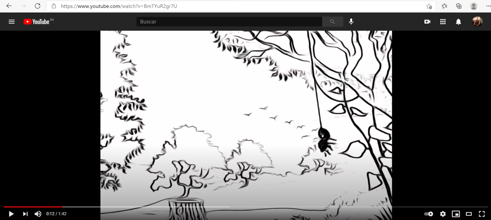

One day + one doubt + motivation
=
an answer, a solution and success.
I have the ability to do good teamwork
and take leadership if required, indicated or mostly when people around
in which it is decided, I do not find problems to socialize
with which I practice having a good communication that allows me to know well the
people and know how to deal with them, relate with patience and flexibility to build trust
and achieve the goal that is proposed, I also have a strong time management that over the years has allowed me
be part of many activities even if it is a very busy or dynamic schedule.
I have knowledge in programming in the HTML and C # language, I also have knowledge
in the creation, normalization and management of databases, I have a certificate in basic office
automation, good command of the power point program, I have an accreditation in typing and computing
administrative degree granted by IGCAD in addition to an Excel certification by Microsoft and a beginner level
Internet Security diploma from the telephone organization of El Salvador.
My goal as a professional is to innovate whenever I find opportunity and help others
can obtain and understand the knowledge I have.
José Antonio
Serpas Ramírez
Col. Espiritu Santo pasaje #6, Usulután, El Salvador · (503) 7893 - 2251
I am a bachelor graduated from the National Institute of Usulután, El Salvador in the specialty of Software Development (2015 - 2017).
I am currently studying Computer Systems and Networks Engineering at the Gerardo Barrios University
Usulután campus,
El Salvador.
Contact
E-mail: joseserpas2525@gmail.com
Linkedin: https://www.linkedin.com/in/josé-antonio-serpas-ramírez-9199a2207
Instagram: https://www.instagram.com/aske25_/
Facebook: https://www.facebook.com/joseantonio.serpasramirez/
Projects
SRPD
Teaching Professionals Registration System.
A system that allows you to quickly and intuitively collect and administer the data of teachers in El Salvador, in addition to allowing interaction between each of the users from any browser with internet access.
 February - December 2020
February - December 2020
Animatic
Animation on Arachnids.
Animation on arachnids made from scratch, the first designs were made by hand and then they left
using programs like InskCape, Gimp, Adobe Illustrator and Blender.

August - December 2020
SRPD Mobile
Registration System for Teaching Professionals Mobile version.
The SRPD system available to everyone at any time, that was achieved by
transport the original SRPD system to its mobile version including
all functions and making it even more accessible to the public.
 August - December 2020
August - December 2020
Dual Voltage Source.
Dual Polarity Variable Voltage Source.
Made from scratch, it allows to have two independent voltage outputs,
one positive and one negative with a maximum amplitude of -15 volts and + 15 volts,
with a maximum current of 1.5 amps.
February - June 2019
Education
National Institute of Usulután
Vocational Technical Baccalaureate in Software Development.
2015 - 2017
Educational complex Profa. Blanca Ramírez de Aviles
Basic education
2007 - 2014
Certifications
-
Basic Office Management - Graphic Institute of Administrative Computing.
-
Administrative Computing Technician - Graphic Institute of Administrative Computing.
-
Microsoft Office Excel Specialist - Microsoft
-
Internet security - Fundación Telefónica El Salvador
-
2
nd
Place - Recitecno 2019 - Gerardo Barrios University
José Antonio Serpas Ramírez
I am a bachelor graduated from the National Institute of Usulután, El Salvador in the specialty of Software Development (2015 - 2017).
I am currently studying Computer Systems and Networks Engineering at the Gerardo Barrios University
Usulután campus,
El Salvador.
Contact
E-mail: joseserpas2525@gmail.com
Linkedin: https://www.linkedin.com/in/josé-antonio-serpas-ramírez-9199a2207
Instagram: https://www.instagram.com/aske25_/
Facebook: https://www.facebook.com/joseantonio.serpasramirez/
Projects
SRPD
A system that allows you to quickly and intuitively collect and administer the data of teachers in El Salvador, in addition to allowing interaction between each of the users from any browser with internet access.
Animatic
Animation on arachnids made from scratch, the first designs were made by hand and then they left
using programs like InskCape, Gimp, Adobe Illustrator and Blender.
SRPD Mobile
The SRPD system available to everyone at any time, that was achieved by transport the original SRPD system to its mobile version including all functions and making it even more accessible to the public.
Dual Voltage Source.
Made from scratch, it allows to have two independent voltage outputs, one positive and one negative with a maximum amplitude of -15 volts and + 15 volts, with a maximum current of 1.5 amps.
Education
National Institute of Usulután
Educational complex Profa. Blanca Ramírez de Aviles
Certifications
- Basic Office Management - Graphic Institute of Administrative Computing.
- Administrative Computing Technician - Graphic Institute of Administrative Computing.
- Microsoft Office Excel Specialist - Microsoft
- Internet security - Fundación Telefónica El Salvador
- 2 nd Place - Recitecno 2019 - Gerardo Barrios University